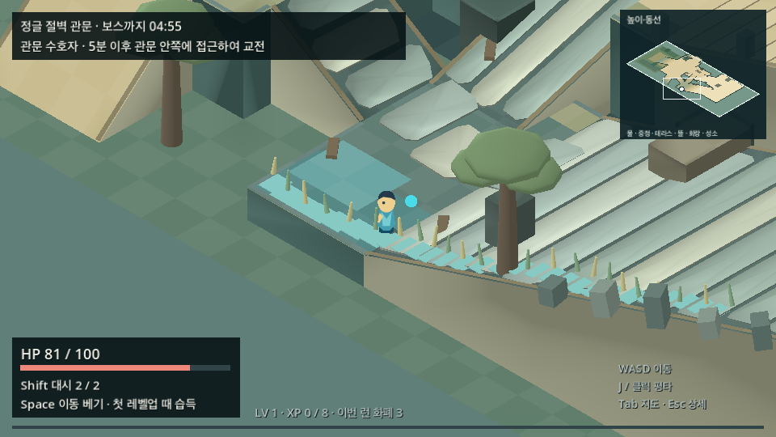
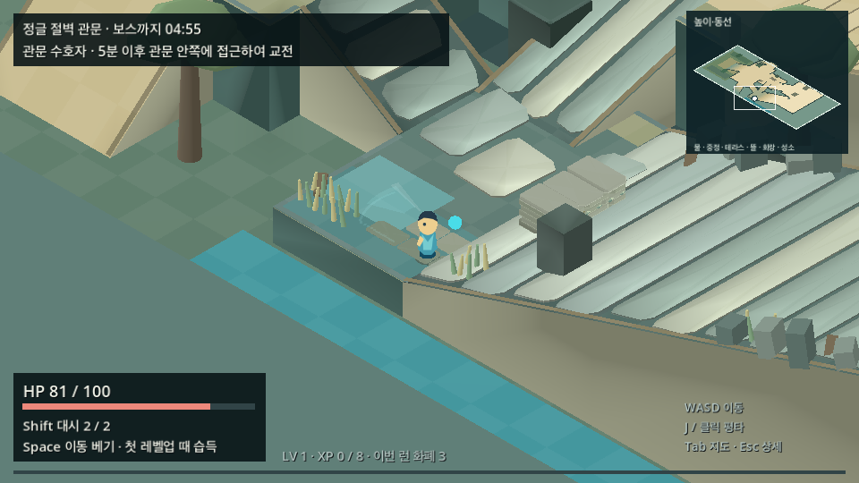
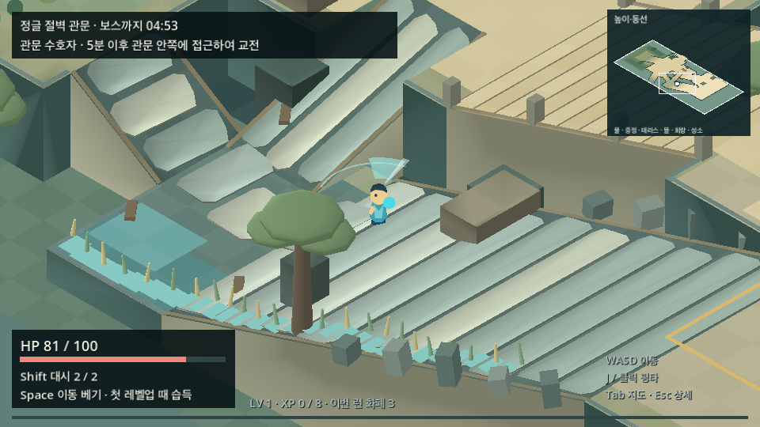
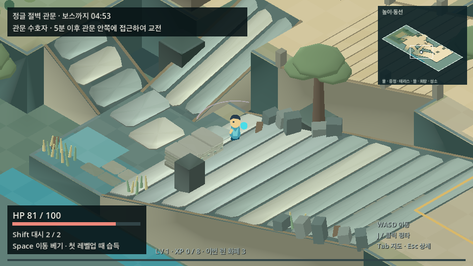
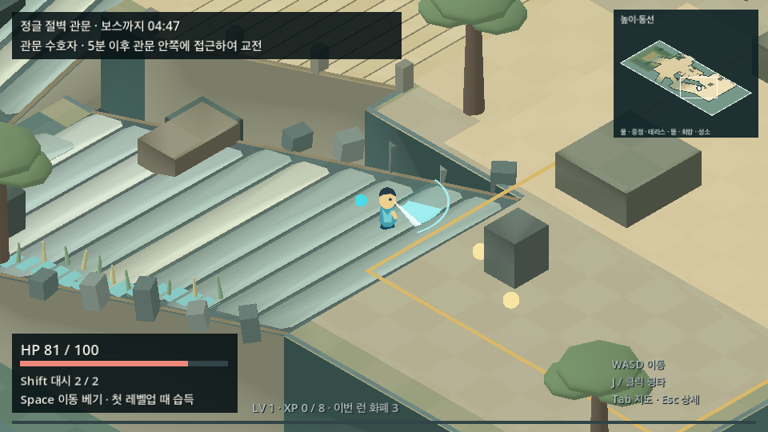
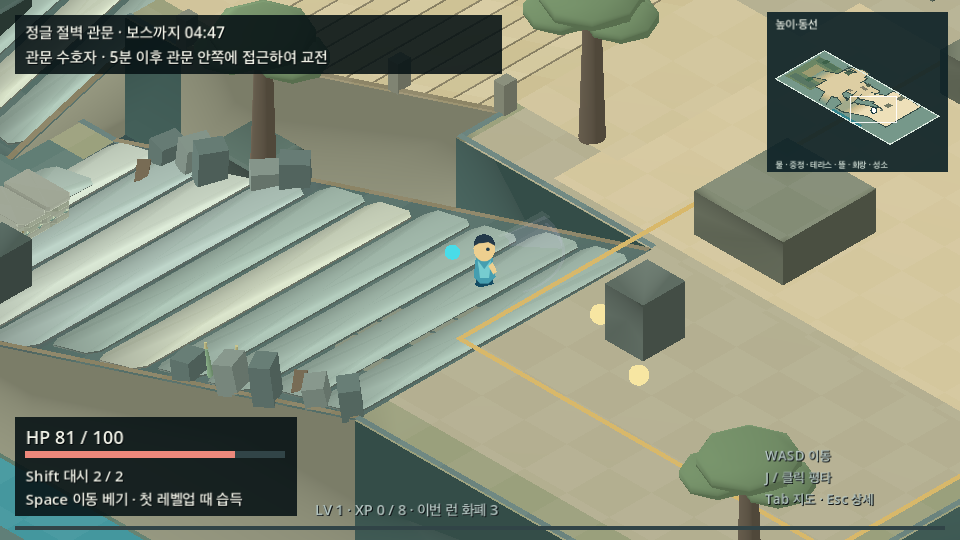

정글 강변 동선 · 한 차례 승인 재배치
Mac Godot 4.6.stable / 실제 게임 씬 / 정상 속도 방향키·공격 입력 / 960×540. 기존 6dbe4b3e와 lane 후보의 같은 경로를 비교합니다. 모든 화면은 원본 PNG이며 합성이나 자산 숨김을 적용하지 않았습니다. 초기 위치 한 번만 배치, 체크포인트는 보행했습니다. 주변 랜덤 스폰·성장 모달·관찰 창의 포커스 일시정지만 동일하게 끈 표본입니다.
기존 기준 HUD의 5분 문구가 보입니다. 통합 담당의 4분 타이머 변경과 추가 적/성장 묶음은 이 lane의 비교 기준에 아직 결합되지 않았습니다. 사람의 재미·맵 볼륨·장소감 수용은 미검증입니다.
낮은 물가
강물은 기존 남쪽 절벽 아래의 실제 수면으로 이어지고, 갈대는 두 가장자리로 모아 가운데 쉼 공간을 비웠습니다.

기존 배치
승인 재배치북측 잔해 접근
동일 잔해 콜라이더와 석조 메시가 함께 이동합니다. 전경 나무는 그대로 불투명하게 북쪽 군집으로 옮겼습니다.

기존 배치
승인 재배치관문 조망 오르막
기존 오르막·관문 목적지를 유지하고 같은 가장자리 돌과 갈대를 군집으로 묶었습니다. 추가 지형·장애물은 없습니다.

기존 배치
승인 재배치